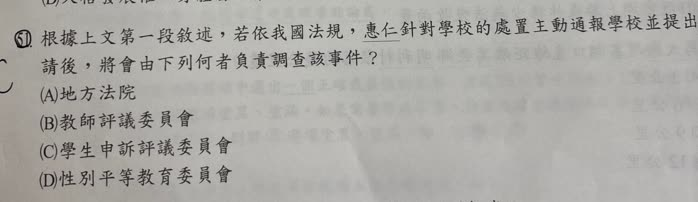

分享原卷｜第51題
完整原題
作答所需文章／材料
身為導師的芸蓁，鑑於校園霸凌問題日益嚴重，因此利用影片與新聞與班上同學進行宣導。她分享一部探討校園霸凌問題的戲劇作品《清潭國際高等學校》，該劇以貧富差距為背景，富家子女利用權勢對出身貧困的學生進行的嚴重霸凌行為。這些霸凌行為包括排擠、嘲諷、辱罵並操控其他學生參與肢體暴力。故事核心聚焦於該名貧窮學生惠仁，在進入貴族學校後所遭遇的階級壓迫與權力鬥爭以及學校對霸凌者的漠視與放任，她要在極端不平等的校園環境中求生存。 隔週的班會課，芸蓁希望在宣導完校園霸凌的相關嚴重性後，希望班上能制定出更適切的班級公約，隨即讓學生以此為討論主題進行班會。而本次擔任主席的政厚，【甲】宣布完開班會後，直接進行討論事項，這時同學舉手提出意見。隨即處理完的主席政厚，順利讓班會進行下去，最終針對提案討論過後，透過多數決，產出新的班級公約。由於沒有額外的臨時動議，政厚也宣布散會，最後，導師芸蓁也給予班上回饋與鼓勵，希望這份新的班級公約，能在班上發揮更好的效用。根據上文第一段敘述，若依我國法規，惠仁針對學校的處置主動通報學校並提出申請後，將會由下列何者負責調查該事件？
(A) 地方法院
(B) 教師評議委員會
(C) 學生申訴評議委員會
(D) 性別平等教育委員會
先想一想，再查看答案、解說與原圖
原卷作答：原卷可見C
本題答案：C，學生申訴評議委員會。重點是針對學校的處置提出申訴。
逐項解析
| 選項與原句 | 判讀 | 句意與判斷理由 |
|---|---|---|
| (A) 地方法院 | 不選 | 不是題目所問的校內學生申訴單位。 |
| (B) 教師評議委員會 | 不選 | 主要為教師相關事項，不是學生申訴單位。 |
| (C) 學生申訴評議委員會 | 應選 | 針對學校處置的學生申訴，由申評會依規定調查評議。 |
| (D) 性別平等教育委員會 | 不選 | 題文未提供性別事件條件，不能直接套用。 |
詳細說明與解題步驟
【抓住針對學校處置的線索】
本題將惠仁對學校處置提出申請，連結到學生申訴制度，因此四個選項中選C，學生申訴評議委員會，簡稱申評會。申評會可就申訴案件調查證據並作評議。
【不要把所有霸凌調查都當成申評會職權】
題幹的「通報、申請、調查」說法較概括。初次通報疑似霸凌事件，與對學校處置不服而提出申訴，是不同的程序；涉及霸凌或校園性別事件時，還要依各自的專門規定處理。C是在本題「針對學校的處置」的申訴脈絡下作答，不能背成凡霸凌都一律交申評會調查。
【其他選項】
A地方法院是司法機關，不是題目要找的校內學生申訴單位。B教師評議委員會主要處理教師相關事項，不是學生申訴單位。D性別平等教育委員會有特定的性別事件職責；本段未提供性侵害、性騷擾或性霸凌的條件，不能自行認定由性平會處理。
核對註記：題幹右緣缺字由使用者確認為申，完整原題及四選項已核對；答案C，程序解說的適用範圍另保留說明。
原圖（僅本題）
